We are YOEO, Your Online Earth Observer - A smart satellite data platform for everyone. We envision a world where small and large businesses alike can exploit the vast potential inherent in satellite data easily, deepening the understanding of our ever-changing globe. Our vision is to break down the tech barrier of modern day earth observation and give everyone the power of satellite based analytics. We are currently working on the web application and underlying software that will give you the world in the palm of your hand. We are excited to go online soon, please come back for updates. - YOEO